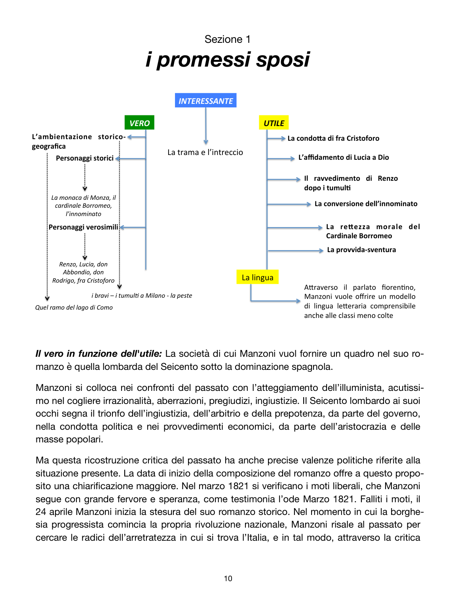

Nel romanzo Manzoni mette alla prova fino in fondo la sua idea di letteratura: ricostruisce il Seicento lombardo, ma parla anche al suo presente, cercando nella storia le radici dell’arretratezza e dell’ingiustizia.

Schema del PDF dedicato al romanzo: ambientazione, personaggi, lingua, funzione pedagogica.
Il vero in funzione dell’utile
La Lombardia del Seicento sotto la dominazione spagnola diventa il laboratorio storico del romanzo. Manzoni mostra il trionfo dell’ingiustizia, dell’arbitrio e della prepotenza, ma non per puro gusto documentario. La ricostruzione del passato serve a leggere il presente e a proporre un modello di società futura.
Il materiale del PDF insiste su un punto forte: nessuna epoca storica, anche la più corrotta, può giustificare il male di un singolo o di un popolo. È una frase da tenere, perché riassume la funzione pedagogica del romanzo molto meglio di molte formule scolastiche.
Trama essenziale
Renzo e Lucia non riescono a sposarsi per l’opposizione di don Rodrigo. Da qui parte una catena di fughe, soprusi, incontri, conversioni, peste, perdono. Il romanzo non racconta solo una vicenda privata: mette in scena una società intera, con ceti, poteri, paure e responsabilità diverse.
Fra Cristoforo, Lucia, il cardinale Federico e l’Innominato mostrano forme diverse del rapporto tra giustizia, misericordia e redenzione. Renzo stesso compie un percorso: da una ribellione ancora acerba a una coscienza più matura.